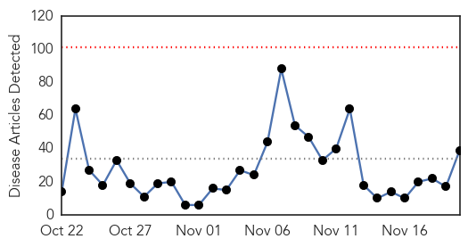

Unknown
30-Day Web Trend
0 alerts, 0 warnings

30-Day Twitter Trend
0 alerts, 0 warnings

Article Locations

Article Confidences
Top Articles:
- 0.987
- Chipotle E. coli outbreak reported in Turlock, California
- 0.981
- Hand, Foot And Mouth Disease On The Rise Parents Cautioned
- 0.980
- Flu shots protect more than just you
- 0.963
- Salmonella outbreak sickens 838 people
- 0.963
- Salmonella outbreak sickens 838 people
- 0.961
- 13 suspected cases -HFM Disease rising in BVI
- 0.934
- Free flu vaccine at Boston City Hall
- 0.928
- Chipotle Mexican Grill, Inc. (NYSE:CMG) - Chipotle Shares Crash On E. Coli Findings
- 0.905
- ADVICE: Stop the spread of the potentially deadly winter vomiting disease Norovirus
- 0.903
- Chipotle E. Coli Outbreak Extends To 6 States, Mexican Grill’s Shares Drop
- 0.886
- Number of syphilis cases on rise in region
- 0.873
- Chipotle E. coli
- 0.869
- Incidence rates up for major STDs
- 0.866
- Chipotle E. coli Outbreak Spreads - Washington, Oregon, California, Minnesota, Ohio and New York
- 0.845
- Chipotle E. Coli Outbreak Spreads To Six States
- 0.835
- Key dates in E. coli outbreak linked to Chipotle
- 0.835
- Key dates in E. coli outbreak linked to Chipotle
- 0.783
- STD rates rise dramatically, especially among men
- 0.778
- Health experts unite against TB and diabetes in Bali Declaration
- 0.772
- Chipotle E. Coli Outbreak Spreads to New York
- 0.769
- 179 exposed, 2 dead after superbug outbreak at UCLA hospital -
- 0.762
- Preparations for diseases need urgency, says Hwang-INSIDE Korea JoongAng Daily
- 0.747
- Health content from National Hog Farmer
- 0.723
- Health care employees should get a flu shot
- 0.721
- UN protection site in South Sudan at risk of being overwhelmed
- 0.720
- Gov. Dayton declares “Get Smart – Know When Antibiotics Work Week” in Minnesota
- 0.702
- Chipotle customer in Erie County contracted E. coli in October
- 0.692
- Rare TB case shows diagnosing, treating children is tough
- 0.689
- Staying alive- Nepali Times
- 0.663
- Red or purple spots on the skin -- what does it indicate?
- 0.659
- Limited Space Jeopardize Health Of Thousands In Malakal PoC Says MSF
- 0.651
- 'More money needed' to beat TB, health agencies warn
- 0.648
- Make Use of Uber App to Get Flu Prevention at Your Door Steps
- 0.645
- Jihadists in Europe stir visa debate in US
- 0.642
- NTM bacterial infection outbreak
- 0.642
- Battle against IS group mired in conflicting national interests
- 0.622
- Local case of E. coli linked to Chipotle Mexican Grill restaurants
- 0.620
- 20 Facts You Didn't Know About the Disease That Is Today the No. 1 Infectious Disease Killer in the World
- 0.607
- Special Reports
- 0.603
- Special forces storm besieged Mali luxury hotel
- 0.593
- South Sudan: MSF tackles spike in malaria with help of local communities
- 0.586
- SA launches world’s first early drug stock out warning system
- 0.586
- What is Lewy body dementia, which robbed robin williams of his sanity?
- 0.584
- HIV "Functionally Cured" In 14 Adults
- 0.578
- The most from the coast
- 0.569
- Oral Health Literacy Key To Kentucky Reaching Goals
- 0.566
- 40 cases of E. coli in Northwest outbreak linked to Chipotle
- 0.550
- Workers in public hospitals stage peaceful demo, asks parliament to intervene
- 0.548
- Africa News
- 0.547
- 'Kissing Bugs’ Are Spreading a Deadly Parasite in Texas
Showing top 50 articles...
Top Tweets:
- 0.560
- RT: Intensive care unit surveillance of flu infection in France: the 2009/10 pandemic and the three subsequent seasons: ht…
Ebola
30-Day Web Trend
0 alerts, 0 warnings

30-Day Twitter Trend
20 alerts, 8 warnings

Article Locations

Article Confidences

Top Articles:
- 1.000
- 3 new confirmed cases in previously Ebola-free Liberia
- 1.000
- No Longer Ebola-Free: Liberia Reports New Case
- 1.000
- Liberia Confirms New Ebola Case in 10-year-old Boy : Physical Wellness : Counsel & Heal
- 1.000
- 3 new confirmed cases in previously Ebola-free Liberia: WHO
- 1.000
- Three New Confirmed Cases In Previously Ebola-free Liberia -WHO
- 1.000
- iafrica.com New Ebola case in Liberia
- 1.000
- Is Ebola back?
- 0.999
- New case reported in Liberia which was declared Ebola free in September
- 0.999
- UPDATE – 3 new Ebola case in Liberia 2 months after all-clear
- 0.999
- Zim hospital closed to monitor suspected Ebola case
- 0.999
- New case of Ebola in Liberia
- 0.999
- New Ebola case confirmed in Liberia
- 0.999
- Ebola crisis: Liberia confirms fresh cases
- 0.999
- The Guardian on Liberia's new Ebola cases
- 0.999
- Africa - News and Analysis
- 0.998
- US Marines land in Ebola hot zone
- 0.998
- WHO: One New Confirmed Case in Previously Ebola-Free Liberia — Naharnet
- 0.998
- 3 new Ebola case in Liberia 2 months after all-clear
- 0.997
- WHO declares end of Ebola outbreak in Sierra Leone
- 0.997
- Ebola lingers in Liberia; boy, 10, infected
- 0.995
- McCain calls for Ebola 'czar'
- 0.995
- Three new confirmed cases in previously Ebola-free Liberia: WHO
- 0.994
- Germany takes 3rd Ebola patient for treatment
- 0.992
- Ebola virus returns to Liberia, 10-year-old boy infected
- 0.990
- Family case cluster ends Liberia's Ebola-free status
- 0.989
- Nina Pham talks advocacy to aspiring health professionals
- 0.987
- Ebola resurfaces in Liberia
- 0.985
- One new confirmed case in previously Ebola-free Liberia: WHO
- 0.966
- New Case Of Ebola Identified In Liberia
- 0.944
- UPDATE 1-New situation of Ebola present in Liberia -Not official
- 0.852
- Locking nurse given medal for Ebola work
- 0.836
- What the refugee panic shares with the Ebola panic
- 0.779
- African leaders, UN, IMF, World Bank discuss Ebola
- 0.763
- CRMC working to create a culture of safety
- 0.661
- Trinidad & Tobago lifts ban on Nigerian travellers
- 0.650
- EXCLUSIVE:Future bright for Sierra Leone, bleak for girls
- 0.615
- Over 250 midwives honored in Bong
- 0.603
- Ebola, Syrian Refugees, And Fox News' Annual Hysteria Over Dark, Invading Forces
- 0.552
- Health experts to take fight to TB
Top Tweets:
- 1.000
- Nach Ebola: Überlebende kämpfen mit Folgeerkrankungen africaagainstebola
- 0.989
- Ebola In Liberia: 1 Confirmed Case Of Disease In Previously Ebola-Free African Country ... - https://t.co/24L3hLXqfK ebola
- 0.982
- Ebola Virus Disease Outbreaks:Situation Update19 November 2015 - https://t.co/Qyn04Lgwk6 ebola
- 0.978
- Fears of Deadly Ebola Virus Reportedly Resurface in Liberia > Monro - Front Page Africa https://t.co/YRQRJ99AfB ebola EVD
- 0.970
- Health authorities report 1 confirmed Ebola case in Liberia previously declared Ebola free - https://t.co/w31YoKuv8Y ebola
- 0.970
- Health authorities report 1 confirmed Ebola case in Liberia previously declared Ebola free - https://t.co/B1xiQIrjyk ebola
- 0.970
- Health authorities report 1 confirmed Ebola case in Liberia previously declared Ebola free - https://t.co/7hZhKQK37q ebola
- 0.969
- More details on Liberia's dismaying cluster of Ebola cases from. Did virus in semen reignite Ebola? https://t.co/TllUhgSi3Y
- 0.969
- Ebola Resurfaces in Liberia - 2 New Cases Confirmed - https://t.co/8699rqWqNV ebola
- 0.965
- Health authorities: 3 new Ebola cases in Liberia - https://t.co/TkHKO8XEpQ ebola
- 0.963
- Fears of Deadly Ebola Virus Reportedly Resurface in Liberia > Monro - https://t.co/I6zwYCKeiZ ebola
- 0.950
- Health authorities: 1 confirmed Ebola case in Liberia - https://t.co/zAQJ1Dc3YI ebola
- 0.950
- Health authorities: 1 confirmed Ebola case in Liberia - https://t.co/iVJcWMWxd7 ebola
- 0.950
- Health authorities: 1 confirmed Ebola case in Liberia - https://t.co/8aMvngrYPL ebola
- 0.950
- Health Authorities: 1 Confirmed Ebola Case in Liberia - https://t.co/7Dz8yQYcpx ebola
- 0.945
- Nieuw geval van ebola in ebolavrij verklaard Liberia - https://t.co/381lyAFtQW ebola
- 0.944
- One confirmed Ebola case in Liberia: Health authorities - https://t.co/YTLgPdtYwB ebola
- 0.944
- Health authorities: one confirmed Ebola case in Liberia - https://t.co/u0DlGpKtDY ebola
- 0.941
- Ebola case confirmed in Liberia - https://t.co/QuuiKoLGqB ebola
- 0.938
- Ebola crisis: Liberia confirms fresh cases - https://t.co/FiE1fKLklY ebola
- 0.933
- Ebola reappears in Liberia after country is twice declared disease-free - https://t.co/kSanHqFan7 ebola
- 0.931
- Guinea: Last Ebola patient tests negative - https://t.co/hRaoKBkBsG ebola
- 0.929
- New Ebola case hits Liberia after country declared virus free - https://t.co/JMrYo2XgWt ebola
- 0.929
- Health Authorities: 1 Confirmed Ebola Case in Liberia - New York Times https://t.co/uyXKi6BTvn ebola EVD
- 0.926
- Fresh Ebola case reported in Liberia - https://t.co/xTNRVHuqLF ebola
- 0.925
- Guinea had least number of cases of Ebola but lost about 67% of them. 28% & 45% died in Sierra Leone & Liberia resp. https://t.co/1xrIgRkxZ8
- 0.925
- Ebola case in Liberia confirmed by WHO - https://t.co/uYtzAaHxA4 ebola
- 0.924
- Ebola Deeply on the Monrovia cases - https://t.co/LBwa9upSEj ebola
- 0.922
- L'épidémie d'Ebola repart au Liberia - https://t.co/fHHxrlVGmD ebola
- 0.919
- Ebola Cases in 3 Family Members Confirmed in Liberia - New York Times https://t.co/J6w8coovj8 ebola EVD
- 0.918
- Ebola resurfaces in Liberia - report - https://t.co/ng5LgAujh1 ebola
- 0.914
- Young doctor receives OBE from Prince Charles for Ebola work in Sierra Leone - https://t.co/sYX40HSNaw ebola
- 0.914
- One new Ebola case confirmed in Liberia: WHO - https://t.co/z4zzwpjDG3 ebola
- 0.911
- New case of Ebola found in Liberia: UN official - Reuters https://t.co/MAmh1aeNvx ebola EVD
- 0.911
- 3 new confirmed cases in previously Ebola-free Liberia - https://t.co/nC6iYFcino ebola
- 0.907
- New Ebola case confirmed in Liberia - https://t.co/hMELsyGUFJ ebola
- 0.907
- New Ebola case confirmed in Liberia - https://t.co/eCOKGToBCx ebola
- 0.899
- New case of Ebola found in Liberia: UN official - https://t.co/alE7slm9bo ebola
- 0.899
- New case of Ebola found in Liberia -UN official - https://t.co/MI8YC3ZnKg ebola
- 0.895
- New case of Ebola found in Liberia says UN official - https://t.co/3E7y1Cbr54 ebola
- 0.895
- New Case of Ebola Found in Liberia UN Official Says - https://t.co/EVyGOnhi0d ebola
- 0.890
- New Ebola case hits Liberia after country declared free of virus - https://t.co/XO8llrFyWY ebola
- 0.887
- One new confirmed case of Ebola in Liberia - https://t.co/RZVeangjoF ebola
- 0.887
- Confirmed Ebola Case in Liberia - https://t.co/tzALHSwww4 ebola
- 0.884
- Liberia records fresh Ebola case - https://t.co/aMEGRvqQEB ebola
- 0.883
- RT: Ebola outbreak in West Africa has resulted in more Ebola survivors than ever before: https://t.co/tzHuMxl5zj
- 0.881
- Three new confirmed cases in previously Ebola-free Liberia - https://t.co/z5TbPtimB7 ebola
- 0.879
- RT: New case of Ebola found in Liberia a country declared free of the virus on September 3 --Senior United Nations Offici…
- 0.879
- RT: New case of Ebola found in Liberia a country declared free of the virus on September 3 --Senior United Nations Offici…
- 0.868
- Ebola - https://t.co/BziwFRlHxG ebola
Showing top 50 tweets...